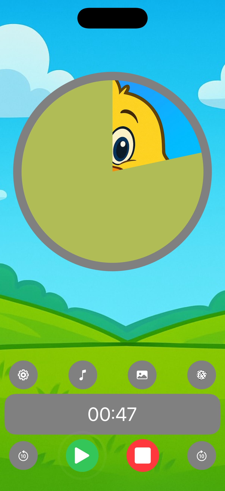
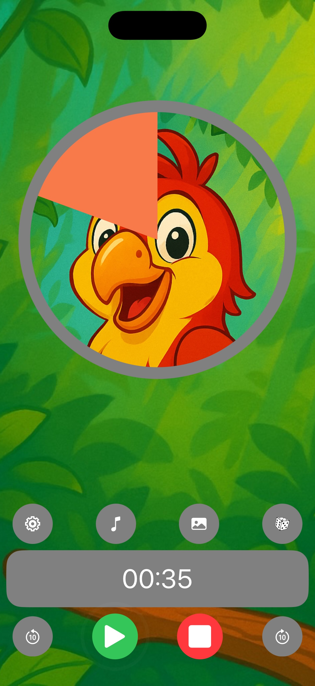
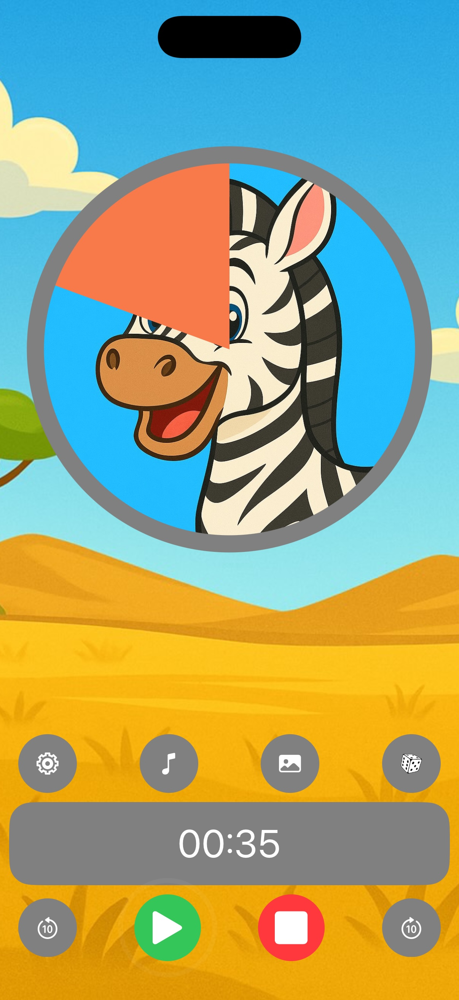
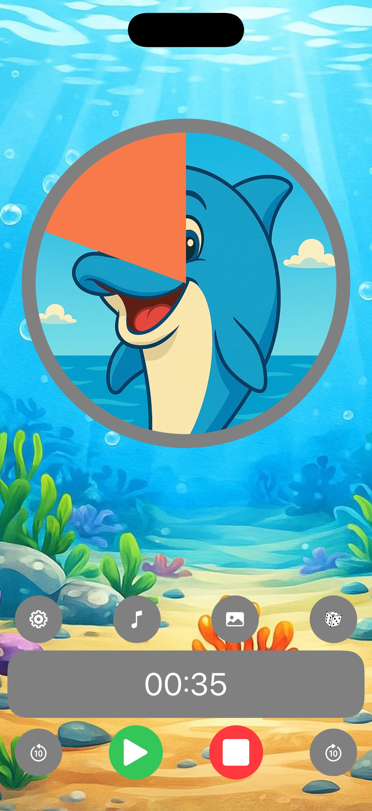
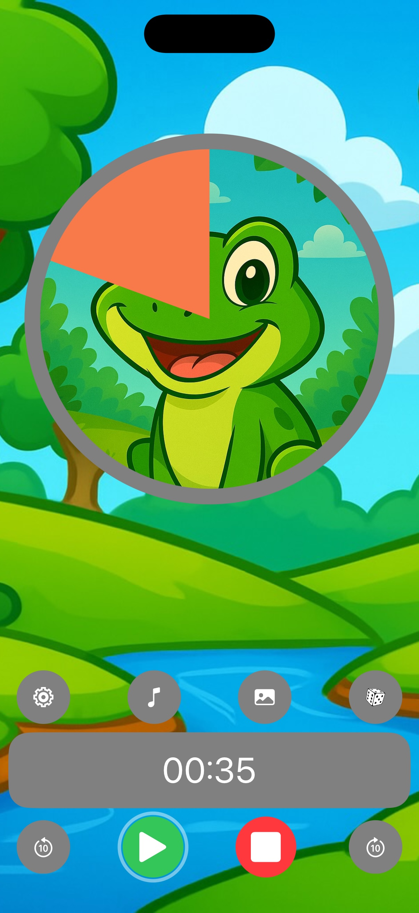

Free on iPhone & iPad
“Five more minutes” means nothing to a child — until they can see it. As the visual countdown runs, a picture is slowly revealed, so kids understand time, finish tasks and switch activities without the battle.
4.6 · 1,400+ App Store ratings · Ages 4+
Loved by parents of toddlers & kids with ADHD or autism — and by teachers in real classrooms.
Download
No account, no reading skills required. Set a time, pick a picture, press start.
Download and use free, with optional premium pictures, music & backgrounds. Family Sharing supported.
Rated 4.6 out of 5 by more than 1,400 parents and teachers on the App Store.
English, Spanish, French, German, Japanese, Arabic, Chinese and more — for iPhone, iPad and Apple Silicon Macs.
Screenshots
200 kid-designed pictures, 25 backgrounds, 20 music themes, 10 time's-up sounds — or reveal your own photos.







How it works
Homework for 20 minutes, screen time for 15, tooth brushing for 2 — any duration, down to the second.
Choose one of 200 kid-designed pictures — or a photo of grandma, the dog, or Saturday's park trip — and it hides behind the timer.
The picture is revealed as time passes. A 3-2-1 final countdown, a celebration and a friendly alert mark the end — even if the app is in the background.
Guides
Practical, step-by-step guides for the routines parents search for most.
Beat “time blindness”: make homework, chores and transitions visible for ADHD brains.
Read the guide → 🧩Use a countdown as a visual support for predictable, low-anxiety transitions.
Read the guide → 📱The screen-time timer routine that hands the “bad guy” role to the timer, not you.
Read the guide → 🧸How 2–5 year olds who can't tell time learn waiting, sharing and “five more minutes”.
Read the guide → 📚Focus sprints, breaks and a finish line your child can literally see.
Read the guide → 🏫Centers, clean-up, circle time and turn-taking with one iPad at the front of the room.
Read the guide → 🪥Make the dentist's two minutes fun: brush until the picture appears.
Read the guide → 🌅Get dressed, eat, shoes on, out the door — on time, without nagging.
Read the guide → 🌙Wind-down countdowns that make lights-out expected instead of resisted.
Read the guide → ⏳Why time is abstract for young children — and how to make it concrete at home.
Read the guide →FAQ
Join thousands of parents and teachers using Visual Timer for Kids for calmer mornings, easier homework and screen-time handoffs without tears.
⬇ Download free on the App Store